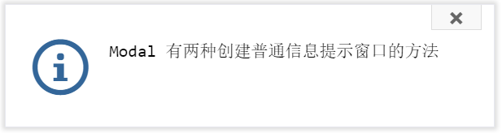

Modal 有两种创建普通信息提示窗口的方法 Modal.info() 和 Modal.tipInfo()。
效果图
Modal.info(
"Modal 有两种创建普通信息提示窗口的方法",
"提示",
function(options, modal){
alert('你点击了确定按钮')
}
);Information: Modal.info( tip, title, callback )

效果图
Modal.tipInfo({
tip: "Modal 有两种创建普通信息提示窗口的方法",
width:400,
height:100,
delay: 10000,
hasClose: true,
afterClose: function(modal){
alert('你点击了确定按钮')
}
});Information: Modal.tipInfo( options )